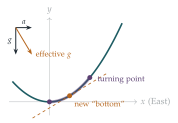

STEP II 2021, Question 10
Read the question before you go on. It is in the STEP II paper in OCR’s download of the 2021 STEP papers (a zip file): www.ocr.org.uk/Images/696588-2021-past-papers.zip
The hook
When a train pulls out of a station, you feel pressed back into your seat; a cup of coffee on the table tilts its surface; a ball on the floor rolls towards the back. From inside the train it looks exactly as if gravity had tilted, pointing slightly backwards as well as down. Einstein called the realisation that this is more than an analogy “the happiest thought of my life”: gravity and acceleration are, locally, indistinguishable.
This question puts a bead on a curved wire in an accelerating train. Seen from the train, the bead behaves exactly as if it were in a gravitational field tilted by the angle whose tangent is \(a/g\). The bottom of the wire is no longer the lowest point, and the bead oscillates about a new equilibrium.
Before you start
The train accelerates westwards (in the negative \(x\) direction) at \(a\). For an observer in the train, what “fictitious” force appears to act on a mass \(m\)?
In the train’s frame, Newton’s second law holds if we add a fictitious force \(-m \times (\text{acceleration of the frame})\). The frame accelerates at \(-a\) in the \(x\) direction, so the fictitious force is \(+ma\), pointing east. Together with gravity, the bead feels an effective gravity of \((a, -g)\) per unit mass: tilted towards the east.
Working it through
Stage 1 No rest at the origin
At the origin the wire \(ky = x^2\) is horizontal. The normal reaction is vertical there, so it cannot cancel the eastward fictitious force \(ma\). The net force along the wire is \(ma \neq 0\), so the bead cannot stay at rest relative to the train.■
Stage 2 An energy equation
Write Newton’s law in the train’s frame, including the normal reaction \(\mathbf{N}\). Then take the dot product with the velocity \((\dot x, \dot y)\). Why does \(\mathbf{N}\) disappear?
In the train’s frame, \[m(\ddot x, \ddot y) = \mathbf{N} + (ma, -mg).\] The wire is smooth, so \(\mathbf{N}\) is perpendicular to the wire, and hence to the velocity \((\dot x, \dot y)\), which is along the wire. Taking the dot product with the velocity kills \(\mathbf{N}\): \[m\dot x\ddot x + m\dot y\ddot y = ma\dot x - mg\dot y, \qquad\text{so}\qquad \dot x(\ddot x - a) + \dot y(\ddot y + g) = 0. \qed\] The left side is the derivative of \(\frac12(\dot x^2 + \dot y^2) - ax + gy\), which is therefore constant.■
This is conservation of energy in the train’s frame, with a potential energy \(-ax + gy\) per unit mass that includes the fictitious force.
Stage 3 How high?
The constant is \(0\), since the bead starts at rest at the origin. At the highest point the bead is momentarily at rest. What equation does that give?
At rest, \(\frac12(\dot x^2 + \dot y^2) = 0\), so \(ax = gy\). With \(y = \frac{x^2}{k}\), this gives \(ax = \frac{gx^2}{k}\), so (apart from the starting point \(x = 0\)) \(x = \frac{ak}{g}\), and \[b = \frac{a^2k}{g^2}. \qed\] The bead swings east and up the wire to the point \(\bigl(\frac{ak}{g}, \frac{a^2k}{g^2}\bigr)\), then back to the origin, and so on.
Stage 4 The fastest point
Write the speed squared as a function of \(x\) alone. Where is it greatest?
The speed squared is \(2(ax - gy) = 2\bigl(ax - \frac{gx^2}{k}\bigr)\), a quadratic in \(x\) that is greatest at \(x = \frac{ak}{2g}\), halfway between the turning points. There the speed squared is \(2\bigl(\frac{a^2k}{2g} - \frac{a^2k}{4g}\bigr) = \frac{a^2k}{2g}\), so the maximum speed is \[a\sqrt{\frac{k}{2g}}. \qed\]
Find the gradient of the wire at \(x = \frac{ak}{2g}\). How does it relate to the direction of the effective gravity \((a, -g)\)?
The gradient is \(\frac{2x}{k} = \frac ag\). So at this point the wire is perpendicular to the effective gravity: it is the “lowest” point of the wire in the tilted field, and the bead oscillates about it (Figure 11.5.1).

Looking back
Work in the convenient frame, and add the fictitious force. In the train’s frame the wire is fixed, and the only price is an extra constant force.
Dot with the velocity. This removes constraint forces and gives an energy equation.
Interpret the answer. The turning point and the fastest point have a geometric meaning: effective gravity is tilted.
What’s really going on
Fictitious forces
Newton’s laws hold in inertial frames, those that are not accelerating. In an accelerating frame they can be rescued by adding fictitious forces: \(-m\mathbf{A}\) for a frame with acceleration \(\mathbf{A}\), and, in a rotating frame, the centrifugal and Coriolis forces. They are called fictitious because no object exerts them; they are artefacts of the frame. But they are perfectly real to anyone inside it. The centrifugal force flattens the Earth at the poles, and the Coriolis force sets the direction in which hurricanes spin (anticlockwise in the northern hemisphere) and deflects long-range artillery shells.
The equivalence principle
A constant fictitious force \(-m\mathbf{A}\) is proportional to mass, exactly like gravity. No experiment in a closed box can tell the difference between the box resting on a planet and the box accelerating in empty space: this is the equivalence principle. Einstein took it as the starting point of general relativity. Since light travelling across an accelerating box appears to bend, light must bend in a gravitational field too; and since clocks at the front and back of an accelerating rocket run at different rates, clocks at different heights in a gravitational field must too. Both predictions have been confirmed, and the second must be corrected for in every GPS satellite, whose clocks run faster than clocks on the ground by about \(45\) microseconds a day from this effect alone.
In 1907, working at the patent office in Bern, Einstein was writing a review article on special relativity when, as he later recalled, “the happiest thought of my life” came to him: a person falling freely from a roof would not feel their own weight. Gravity could be “transformed away” by choosing a falling frame. It took him eight more years, and a great deal of new mathematics (the differential geometry of curved spaces, developed by Gauss and Riemann), to turn the thought into the general theory of relativity of 1915.
The thinking skill
In a frame with constant acceleration, a constant fictitious force acts. It can be included in a potential energy, and energy is conserved in that frame.
The trick of dotting the equation of motion with the velocity to eliminate constraint forces works in any frame. At university it becomes a general principle: a system whose equations do not depend explicitly on time has a conserved energy.
Try this next
A cannon on a train. Try STEP I 2000, Question 9: a projectile fired inside an accelerating carriage, where the acceleration acts like a tilt in gravity.
A headwind. Try STEP II 2006, Question 11: a projectile against a constant wind, which can blow it back towards you before it lands.
Coffee in a train. Show that the surface of a cup of coffee in the accelerating train is a plane tilted at angle \(\arctan(a/g)\) to the horizontal.
Small oscillations. Find the period of small oscillations of the bead about \(x = \frac{ak}{2g}\). (Hint: near the new bottom the wire is approximately a circle of radius equal to its radius of curvature.)
Further reading
Daniel Kleppner & Robert Kolenkow, An Introduction to Mechanics (Cambridge University Press), the chapter on non-inertial frames and fictitious forces.
Albert Einstein, Relativity: The Special and the General Theory (various editions). Einstein’s own popular account, including the accelerating box.
Pedro Ferreira, The Perfect Theory (Little, Brown). A biography of general relativity.